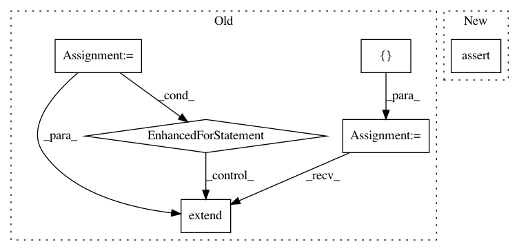

85f717770691b70cfa9077d2d3228b205d19b18d,tests/test_preprocessing.py,TestPreprocessing,test_rotate_pyfunc,#TestPreprocessing#,152
Before Change
self.x_and_pi_same(run_one, run_two),
"Not randomly rotated")
syms = []
for (x, pi, v), (x2, pi2, v2) in zip(run_one, run_two):
self.assertEqual(v, v2, "values not the same")
// For each record find the symmetry that makes them equal
syms.extend(
map(lambda r: self.find_symmetry(*r), zip(x, pi, x2, pi2)))
difference = set(symmetries.SYMMETRIES) - set(syms)
self.assertEqual(len(syms), num_records, "Not same number of records")
self.assertEqual(difference, set(), "Didn"t find these rotations")
After Change
self.reset_random()
run_three = self.extract_data(f.name, random_rotation=True)
self.assert_rotate_data(run_one, run_two, run_three)
def test_tpu_rotate(self):
num_records = 100
raw_data = self.create_random_data(num_records)
In pattern: SUPERPATTERN
Frequency: 3
Non-data size: 6
Instances
Project Name: tensorflow/minigo
Commit Name: 85f717770691b70cfa9077d2d3228b205d19b18d
Time: 2018-08-15
Author: sethtroisi@google.com
File Name: tests/test_preprocessing.py
Class Name: TestPreprocessing
Method Name: test_rotate_pyfunc
Project Name: tensorflow/minigo
Commit Name: 85f717770691b70cfa9077d2d3228b205d19b18d
Time: 2018-08-15
Author: sethtroisi@google.com
File Name: tests/test_preprocessing.py
Class Name: TestPreprocessing
Method Name: test_tpu_rotate
Project Name: keras-team/keras
Commit Name: 8e95a38e7a4be3a3edd8139dbd26e994e50d0a0c
Time: 2021-04-04
Author: scottzhu@google.com
File Name: keras/distribute/multi_worker_test.py
Class Name: KerasMultiWorkerTestIndependentWorker
Method Name: testSimpleModelIndependentWorkerSync